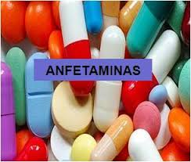
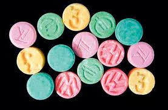

Marihuana.
|
Es la droga ilegal preferida por los usuarios. Los efectos al fumarla van desde la falta de coordinación física, a la taquicardia, somnolencia o depresión. Además, el humo de la marihuana contiene alrededor de un 70 por ciento más de sustancias causantes de cáncer que el humo del tabaco, según ha confirmado la Fundación por un Mundo Libre de Drogas (FMLD). |
Cocaína.
|
La cocaína es un estimulante del sistema nervioso y genera una fuerte adicción. Su efecto inmediato se presenta en síntomas como la paranoia, el enfado o la ansiedad. Sus mayores riesgos son el ataque cardíaco o la apoplejía, que pueden causar la muerte repentina.
|
Inhalantes.
|
Las drogas que se inhalan aumentaron de un 1'4 por ciento en 2002 a un 2'4 por ciento en el 2008. Estas sustancias son las causantes de la irritación de las mucosas nasal y bucal. Los daños más graves que generan estas drogas son la ceguera, el infarto cerebral, la pérdida de memoria y problemas cardíacos. |
Alcohol.
 |
Los efectos inmediatos del alcohol son la euforia, la desinhibición y la sensación repentina de bienestar. El consumo excesivo de alcohol también causa daños permanentes al cerebro, que se presentan como convulsiones y delirios, además de dificultar la absorción de las vitaminas B, E, A, K y C. |
Tabaco.
 |
El hábito de fumar perjudica a casi todos los órganos del cuerpo, además provoca el envejecimiento prematuro de la piel y tiene relación directa con numerosos tipos de cáncer, como el de pulmón o el de la cavidad oral, según ha publicado el portal 'salud180'. |
Tranquilizantes.
|
Están dentro de esta categoría los medicamentos utilizados para tratar el estrés, la ansiedad o conciliar el sueño. En el corto plazo generan aislamiento, cansancio y disminuyen la reacción emocional. En el largo plazo generan cambios en el peso, dificultades para conciliar el sueño y alteraciones de los periodos menstruales.
|
Anfetaminas.
 |
El hábito de fumar perjudica a casi todos los órganos del cuerpo, además provoca el envejecimiento prematuro de la piel y tiene relación directa con numerosos tipos de cáncer, como el de pulmón o el de la cavidad oral, según ha publicado el portal 'salud180'. |
Éxatasis.
 |
Según ha informado la Secretaría de Seguridad Pública (SSP), en México se consumen al año alrededor de 400 kilogramos de éxtasis. Esta droga aumenta la memoria, tiene efectos antidepresivos y sirve para aumentar la resistencia física. Sin embargo, puede causar la muerte repentina, ya que conduce a la deshidratación y el daño cerebral.
|